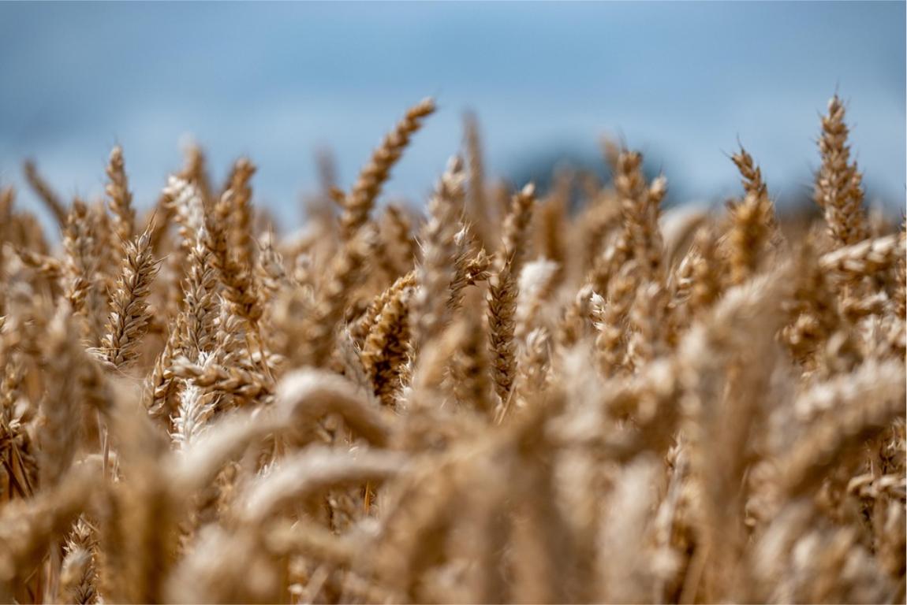

Cultura do Trigo: Do plantio até a colheita
Nesta página, você vai conhecer os principais aspectos da cultura do trigo. Vamos falar desde a sua importância no campo até as tecnologias que impulsionam a produção. Tudo explicado de forma simples, direta e útil para quem quer entender mais sobre essa cultura tão presente no nosso dia a dia.

O trigo é uma das culturas mais antigas e essenciais da humanidade, cultivado há mais de 10 mil anos e presente na base alimentar de diversas civilizações. Rico em carboidratos e versátil no processamento, ele é o principal ingrediente para a produção de pães, massas, biscoitos e uma infinidade de produtos que fazem parte do dia a dia das pessoas em praticamente todo o mundo.
No Brasil, embora o país ainda dependa de importações para atender à demanda interna, a produção nacional vem crescendo com avanços genéticos e tecnológicos que permitem o cultivo em diferentes regiões. A cultura tem forte impacto econômico, especialmente no Sul, onde se concentra a maior parte das lavouras. Além de sua importância para a segurança alimentar, o trigo também movimenta cadeias industriais inteiras, desde moinhos e panificadoras até o setor de exportações. Sua relevância global e seu papel estratégico na mesa dos brasileiros fazem do trigo uma das commodities agrícolas mais influentes da atualidade.
Principais regiões produtoras
A produção de trigo no Brasil é fortemente concentrada na Região Sul, responsável por mais de 85% de toda a produção nacional. O Paraná se destaca como líder absoluto, combinando clima favorável, tradição agrícola e elevado nível tecnológico nas lavouras. Logo atrás vem o Rio Grande do Sul, que possui uma forte cultura tritícola e responde por grande parte do abastecimento interno, apesar de sofrer mais influência das variações climáticas ao longo da safra.
Fora do Sul, estados como São Paulo, Mato Grosso do Sul e Goiás têm ampliado seu cultivo graças a avanços genéticos que desenvolveram variedades adaptadas ao Cerrado. Embora ainda representem uma parcela menor da produção, essas regiões mostram potencial crescente, impulsionadas por sistemas irrigados e manejo mais moderno. Ao reunir clima, tecnologia e expansão para novas áreas, o Brasil avança cada vez mais para reduzir a dependência de trigo importado.
Calendário da Safra
O calendário da safra de trigo no Brasil varia conforme a região, principalmente devido às diferenças de altitude e temperatura. Nas regiões Sul e Sudeste, onde está a maior parte da produção, o plantio acontece entre abril e julho, aproveitando o clima mais ameno que favorece o desenvolvimento da cultura. A colheita ocorre entre setembro e dezembro, período em que as temperaturas começam a subir e o ciclo da planta se completa com qualidade.
Nas áreas de Cerrado, como Goiás e Mato Grosso do Sul, o trigo irrigado permite um calendário um pouco mais flexível. O plantio costuma ocorrer entre maio e junho, logo após a colheita da soja, e a colheita vai de setembro a novembro. Essa janela possibilita que o trigo seja usado como alternativa estratégica na segunda safra, contribuindo para a rotação de culturas e para o melhor aproveitamento do solo ao longo do ano.
Usos e aplicações
O trigo é uma das culturas mais tradicionais e essenciais da alimentação humana, sendo a principal matéria-prima para a produção de farinha. Dessa farinha surgem alimentos que fazem parte do cotidiano de milhões de pessoas, como pães, bolos, massas, biscoitos e tortilhas. Sua versatilidade permite que diferentes tipos de trigo sejam destinados a finalidades específicas, garantindo qualidade e textura adequadas para cada produto.
Além do consumo tradicional, o trigo também é utilizado na alimentação animal, principalmente na forma de farelo, que é rico em fibras e complementa dietas de bovinos, suínos e aves. Na indústria, seus derivados participam de processos que vão desde a fabricação de etanol até a produção de bioplásticos e amidos modificados. Essa combinação de usos torna o trigo uma cultura estratégica e de grande importância econômica no Brasil e no mundo.
O Trigo como Commodity
O trigo é uma das commodities agrícolas mais antigas e influentes da história, formando a base da alimentação de grande parte da população mundial. Por ser um produto amplamente consumido e comercializado, seu preço é definido no mercado internacional, principalmente nas bolsas de Chicago (CBOT) e Kansas (KCBT), que servem como referência para negociações em diversos países.
Esse papel de commodity faz com que variações climáticas, estoques globais, conflitos internacionais e políticas agrícolas impactem diretamente no valor do trigo. Como o Brasil ainda importa uma parcela significativa do que consome, alterações no preço internacional influenciam tanto a indústria quanto o consumidor final. Mesmo assim, avanços tecnológicos e a expansão da cultura no Cerrado têm fortalecendo a participação brasileira, ampliando a oferta e reduzindo a dependência externa.
Assim, o trigo não é apenas um alimento básico, mas um produto estratégico no cenário econômico global, capaz de mover mercados, orientar políticas e influenciar cadeias produtivas inteiras.
Tecnologias no Cultivo do Trigo
O cultivo do trigo tem avançado significativamente com o uso de tecnologia, permitindo maior produtividade e eficiência no manejo da lavoura. A agricultura de precisão oferece informações detalhadas sobre solo, clima e desenvolvimento da planta, ajudando o produtor a tomar decisões mais assertivas em cada fase do ciclo. Sensores, drones, GPS e softwares especializados já se tornaram ferramentas essenciais para monitorar o trigo e otimizar os recursos. Entre as principais tecnologias utilizadas, destacam-se:
Mapeamento do solo e fertilização de precisão
O mapeamento detalhado do solo identifica variações de nutrientes, compactação e pH, permitindo aplicar fertilizantes de forma localizada. Isso garante um fornecimento equilibrado de nitrogênio, fósforo e potássio, promovendo um crescimento uniforme e maior produtividade.
Drones e imagens de satélite
Drones equipados com câmeras multiespectrais monitoram a lavoura, identificando áreas com estresse hídrico, doenças ou infestação de pragas, como percevejos e pulgões, antes que se tornem problemas críticos.
Plantio de precisão com GPS
Tratores e semeadoras com GPS garantem a uniformidade no espaçamento e profundidade das sementes, favorecendo uma emergência homogênea e maior rendimento de grãos.
Sistemas de irrigação inteligentes
Em regiões onde a irrigação é necessária, sistemas automatizados ajustam a quantidade de água conforme a necessidade da planta, evitando desperdícios e promovendo maior eficiência hídrica.
Softwares de monitoramento e gestão da lavoura
Plataformas digitais acompanham o ciclo fenológico do trigo, alertando sobre o momento ideal de aplicação de defensivos, controle de pragas e adubação, além de ajudar no planejamento de colheita e logística.
Pragas e Doenças
O trigo enfrenta diversos desafios ao longo do seu ciclo, entre pragas e doenças que podem reduzir a produtividade e comprometer a qualidade dos grãos. Entre as principais pragas, destacam-se:
- Percevejo-do-trigo (Nysius simulans e Oxycarenus spp.): sugam a seiva das plantas, principalmente das folhas e espigas, causando deformações e queda de produtividade.
- Pulgões (Schizaphis graminum e Sitobion avenae): além de enfraquecerem a planta, podem transmitir vírus que comprometem o desenvolvimento do trigo.
- Lagartas (Spodoptera spp.):devastam folhas e espigas, prejudicando o enchimento de grãos e aumentando o risco de perda da safra.
Entre as doenças mais relevantes da cultura, destacam-se:
- Ferrugem-asa-vermelha (Puccinia striiformis): forma estrias amareladas nas folhas, prejudicando a fotossíntese e reduzindo o rendimento.
- Oídio (Blumeria graminis): cobre as folhas com um pó branco, enfraquecendo a planta e diminuindo a qualidade do grão.
- Mancha-de-Helmintosporium (Bipolaris sorokiniana): causa lesões nas folhas e hastes, podendo levar à podridão de sementes e redução do rendimento.
Técnicas de Manejo
O manejo eficiente do trigo vai muito além do uso de defensivos químicos: envolve uma série de práticas que previnem problemas, aumentam a produtividade e promovem sustentabilidade. Tudo começa com a escolha de sementes de alta qualidade, resistentes a pragas e doenças comuns da região. A rotação de culturas é fundamental, alternando o trigo com outras plantas como soja ou milho, para quebrar ciclos de pragas e reduzir a pressão de doenças no solo.
Além disso, o monitoramento constante da lavoura é essencial. Caminhar pelo campo, utilizar drones ou imagens de satélite permite identificar precocemente infestação de pragas e sinais de doenças, possibilitando intervenções pontuais e reduzindo o uso excessivo de defensivos. Técnicas como adubação balanceada, manejo adequado da irrigação e espaçamento correto também contribuem para plantas mais saudáveis e resistentes. Combinando essas estratégias, o produtor garante maior eficiência, qualidade dos grãos e sustentabilidade ao longo do ciclo do trigo.
Cultura do Trigo: tradição, tecnologia e produtividade
O trigo é muito mais do que um cereal cultivado para alimentação: ele representa tradição, segurança alimentar e economia. Cuidar bem da lavoura, conhecendo suas pragas e doenças, aplicando técnicas de manejo inteligente e aproveitando tecnologias modernas, garante produtividade, qualidade e sustentabilidade. Com planejamento, monitoramento constante e uso estratégico de ferramentas de precisão, é possível proteger a plantação, otimizar recursos e potencializar a produção, mostrando como o trigo continua sendo uma das culturas essenciais para o campo e para o país.